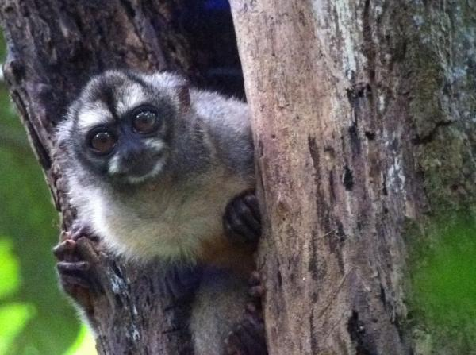

| Mico nocturno panameño | ||
|---|---|---|
|
El mico nocturno se caracteriza por tener un pelaje castaño oscuro con pelaje anaranjado o amarillo en el abdomen y pezar entre 600 y 900 gramos. Su nombre científico es Aotus zonalis. Este primate es nocturno, solo habita en Panamá y alguna partes de Colombia, en los arboles de bosques poblados . Actualmente no se conoce el número de ejemplares, pero su peor enemigo es la deforestación indiscriminada y la contaminación. | ||
|  | ||